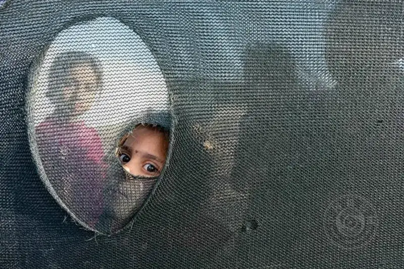
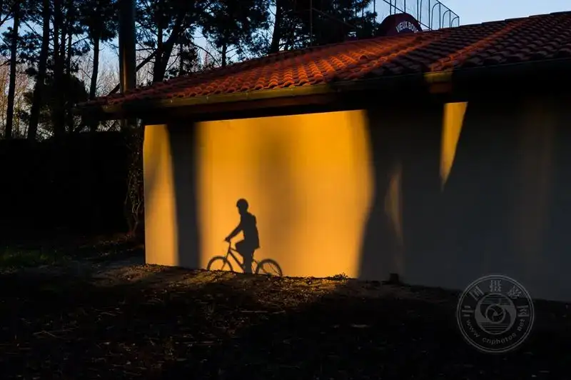
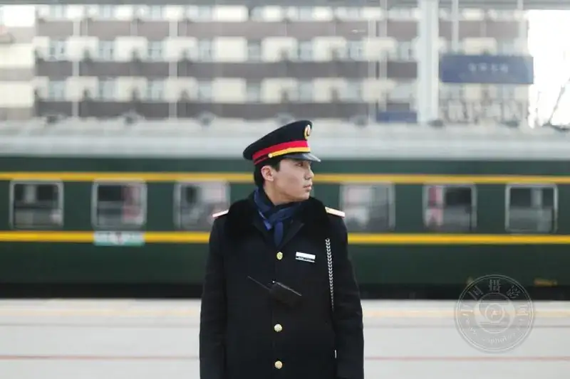
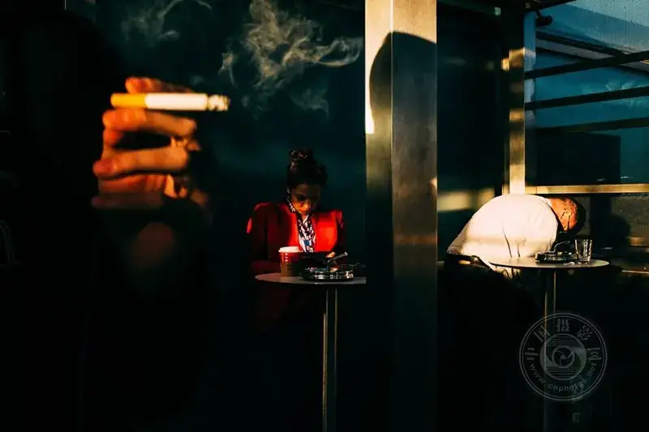
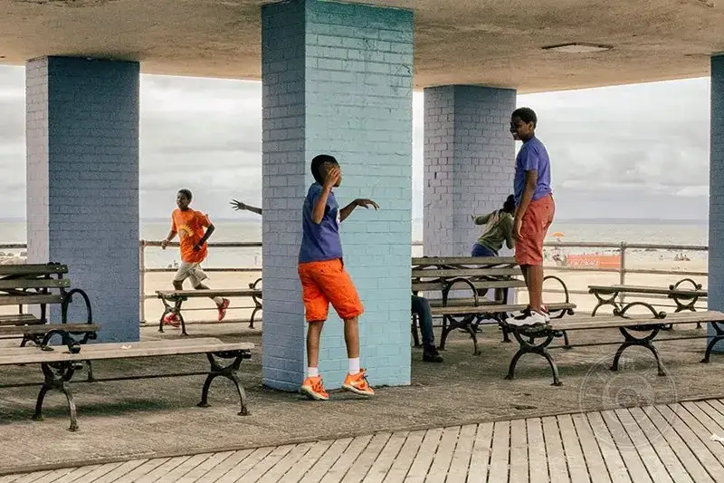
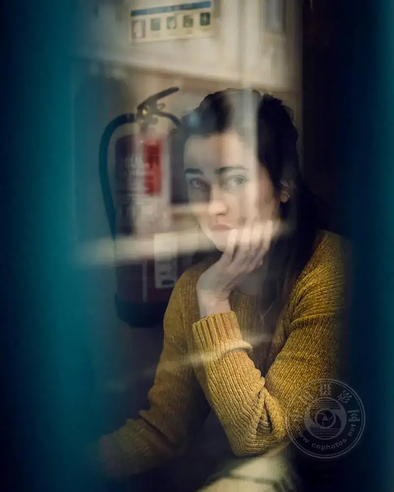

Street photography needs a lens that can catch spontaneous moments, adapt to many lighting conditions, and give flexible framing. The right lens greatly affects the quality and style of your street work, from wide scenes of city life to close portraits of strangers. This article covers five must-have street lenses. For each one, it gives advice on when and where to use it.

©Rana Öztürk
#1. 35mm prime: the classic street lens
Why it is ideal
The 35mm is a favorite among street photographers because it captures a view close to the natural field of the human eye. It gives balanced perspective, and it is well suited to shooting people in their setting, with no obvious distortion.
Best uses
Everyday street scenes: the 35mm excels at catching spontaneous daily moments. Its wide frame holds enough background to tell a story while keeping the subject clear.
Crowded, busy settings: in a lively market or a busy street, the 35mm lets you shoot people without getting too close, which keeps a natural, candid feel.
Imagine you are at a bustling street market. With the 35mm, you can shoot a vendor filling a bowl for a customer, while the passing crowd and colorful stalls fill the background. All of this sits in one coherent photo that carries the mood of the scene.

©Jontxu Fernandez
#2. 50mm prime: the all-rounder
Why it is ideal
The 50mm is often called a nifty fifty, and it is light, small, and versatile. It gives a natural view close to the 35mm, but the frame is a little tighter, which helps the subject stand out.
Best uses
Street portraits: the 50mm is great for natural portraits. With no obvious distortion, it lets you move close to the subject while keeping the image sharp.
Low light: with a wide aperture (usually f/1.8 or larger), the 50mm does well in low-light street shots, such as early morning or evening, when other lenses struggle.
Imagine you shoot a street artist at dusk. The wide aperture of the 50mm gives a soft background blur, keeps the focus on the artist, and makes a portrait with a strong sense of story.

©Siddharthan Raman
#3. 85mm prime: ideal for details from afar
Why it is ideal
The 85mm lets you shoot people and details from farther away. It is ideal for catching natural moments without intruding on a person's space. Its compressed perspective adds depth and makes the background seem closer to the subject.
Best uses
Candid portraits: the 85mm is great for candid street portraits, especially when you want to keep your distance. That distance helps the person relax, so their expression stays natural and unposed.
Details from afar: use it to shoot building details, signs, or street art from a distance, and get a clear close-up without moving in.
In a busy park, you notice an old man reading a newspaper on a bench. The 85mm lets you catch this quiet moment from afar. The soft background pulls the viewer's eye straight to his calm expression.

©Giacomo Vesprini
#4. 24mm wide: ideal for broad street scenes
Why it is ideal
The 24mm gives a wide view. It is well suited to large, lively scenes with many people, dense buildings, and rich detail. It emphasizes a sense of space and makes the viewer feel present.
Best uses
Urban landscape and architecture: the 24mm fits street buildings or a city skyline. It can take in a whole building or a wide city view in one photo.
Dynamic shots in crowds: it holds several subjects in one frame, which adds energy to the photo.
You explore a lively street market full of colorful stalls and crowds. The 24mm takes in the stalls in the foreground and the flowing crowd in the background, making an immersive, vibrant image.

©Ronen Berka
#5. 70-200mm telephoto zoom: a tool for long-distance storytelling
Why it is ideal
The 70-200mm offers great flexibility through its zoom range. It lets you shoot distant subjects without moving. This is especially useful for candid shots or when you need to catch a specific detail from far away.
Best uses
Distant shooting: the 70-200mm is useful when you cannot or should not get close, such as at protests, public performances, or large events.
Isolating the subject: it is strong at separating a subject in a crowd. Its narrow field keeps the subject in sharp focus while blurring the background.
At an outdoor concert, you use the 70-200mm to shoot a musician on stage from afar. The lens compresses the background and makes the artist stand out, giving a clean, striking photo above the crowd.

©Paola Franqui
How to choose a lens for your street style
Each lens has its own traits, and it can lift your street work according to your goals and your setting. Here is a quick summary:
35mm: good for general street scenes. Its wide view sets the environment well.
50mm: an all-rounder for natural-light portraits and low light.
85mm: for candid portraits and details from afar.
24mm: for immersive street scenes and architecture.
70-200mm: strong at distant shots and isolating the subject.
Trying different lenses helps you find your own style and gives your street work more life. Whether you shoot busy city streets or a quiet moment on a park bench, the right lens makes a real difference to the story you tell.